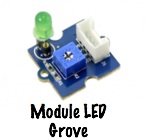
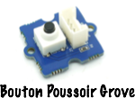

Découverte des entrées sorties numériques
Réalisation de l'activité
Pour cela vous devrez impérativement utiliser le squelette du programme Arduino donné ci-dessous :
/**************************************************************************************************
Nom ......... : Clignotement_led_13.ino
Role ........ : Fait clignoter la led reliée à la pin 13 d'une carte Arduino MEGA
Cycle : 500ms OFF; 500ms ON
Auteur ...... : Votre nom
Classe ...... : Votre classe
Etablissement : Lycée Louis Rascol, Albi, FRANCE <http://louis-rascol.entmip.fr/>
Mail ........ : Votre_mail@e.rascol.net
Version ..... : V0.0 du xx/xx/16
Licence ..... : Copyright (C) 2016 Votre nom
This program is free software: you can redistribute it and/or modify
it under the terms of the GNU General Public License as published by
the Free Software Foundation, either version 3 of the License, or
(at your option) any later version.
This program is distributed in the hope that it will be useful,
but WITHOUT ANY WARRANTY; without even the implied warranty of
MERCHANTABILITY or FITNESS FOR A PARTICULAR PURPOSE. See the
GNU General Public License for more details.
You should have received a copy of the GNU General Public License
along with this program. If not, see <http://www.gnu.org/licenses/>
Compilation . : Avec l'IDE Arduino
****************************************************************************************************/
//Ajout de bibliothèques
//Déclarations de constantes
//Déclaration de variables
void setup()
{
//Insérez ici vos paramètres
}
void loop()
{
//Insérez ici votre programme principal
}
Pour la suite vous pouvez télécharger un fichier zip squelette pré-rempli : Télécharger
Marche à suivre :
- Faire l'algorithme du programme en utilisant la notation algorithmique normalisée.
- Créer un fichier Arduino et y copier-coller le squelette.
- Codez votre algorithme ne soyez pas avare en commentaires.
- Téléversez sur la carte et vérifiez le bon fonctionnement.
- Appelez le professeur pour valider.
Important
La validation de l'exercice sera uniquement effectuée lors de la présentation d'un algorithme juste et d'un code Arduino suffisamment commenté en fonctionnement.
1. Utilisation des sorties numériques sur une carte Arduino
1.1 Clignotement led 13
Nous souhaitons dans un premier temps faire clignoter la led 13 d'une carte Arduino MEGA. La led devra rester allumée 500ms et éteinte 500ms.
Info
La led 13 est la led reliée à la pin 13 soudée sur la carte Arduino MEGA ou Arduino UNO comme le montre la figure ci-dessous.

1.2 Utilisation du module Grove led

À présent utilisez le programme précédent pour faire clignoter la led d'un module LED Grove relié à la pin numérique 2. Nous utiliserons le même cycle de clignotement que tout à l'heure soit, 500ms éteinte / 500ms allumée.
2. Utilisation des entrées numériques sur une carte Arduino
2.1 Bouton poussoir sans condition

Allumer la led du module Grove de la partie 1 lors d'un appui sur le bouton poussoir. La led est toujours reliée à la pin numérique 2 et le bouton poussoir à la pin numérique 6. Dans un premier temps, ne pas se servir de la condition if() ou if() else.
2.2 Bouton poussoir avec condition
À présent vous devez faire le même exercice que précédemment mais en utilisant une condition de type if() ou if() else. Nous utiliserons les mêmes pins.
2.3 Allumage inversé
Cette fois-ci il s'agit d'allumer la led quand le bouton poussoir est relâché et de l'éteindre quand on appui sur celui-ci. Nous utiliserons les mêmes pins.
2.4 Allumage et extinction explicites
Pour finir, un appui sur le bouton poussoir allumera la led et la laissera allumée, un autre appui éteindra la led et la laissera éteinte.
Créé: November 13, 2023